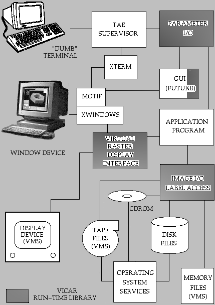

3.1 Background
3.1.1 VICAR Changes Under UNIX
3.2 Applications of VICAR
3.3 System Acquisition
For its command-line interface, VICAR makes use of the Transportable Applications Executive (TAE) that was developed by the NASA Goddard Space Flight Center. This version of VICAR makes use of several enhancements to TAE, which should be included with your version of VICAR. Several VICAR programs may not run without these enhancements.
The VICAR executive is a body of software that forms the interface between the user, the library of application programs and procedures, and the computer's operating system. The VICAR executive does not replace the host computer's operating system; instead, it overlays the host resources. The objectives of the VICAR executive are to:
VICAR's application library contains an extensive assortment of programs and procedures to perform a wide variety of functions (Appendices 10.1, 10.2 and 10.3). These programs are written in standard programming languages, FORTRAN, C and C++, with small segments in VAX assembler and array processor code (not portable code).
The user interfaces with the VICAR executive via a series of TAE Command Language (TCL) statements (Section 7.1). Through TCL, the user directs VICAR to invoke the programs, procedures and commands to perform the analytical and housekeeping activities necessary to complete a required task.
Programs interface with the VICAR executive via a standard set of subroutines that perform image, label and parameter processing plus control several external devices such as display devices and printers (Figure 3.1). The interface is known as the VICAR Run-time Library (see the VICAR Run-time Library Reference Manual). Other libraries exist that provide access to databases, external devices such as display devices and printers, etc. The subroutines are designed to reduce some of the routine labor involved in writing an application program.
Because of its modular architecture and portability, the VICAR system will continue to grow. New capabilities are being added to take advantage of new technology, to meet the demands of the user, and to provide support for new application areas.

Figure 3.1 VICAR Program Interface
ulogon and ulogoff files
- 5.4.1 and 5.4.2
3.3 System Acquisition
VICAR is available to organizations through the Computer Software
Management and Information Center (COSMIC):
COSMIC Software Information Services Computer Services Annex The University of Georgia Athens, Georgia 30602 706-542-3265

If you wish to return to the Contents page, click here.